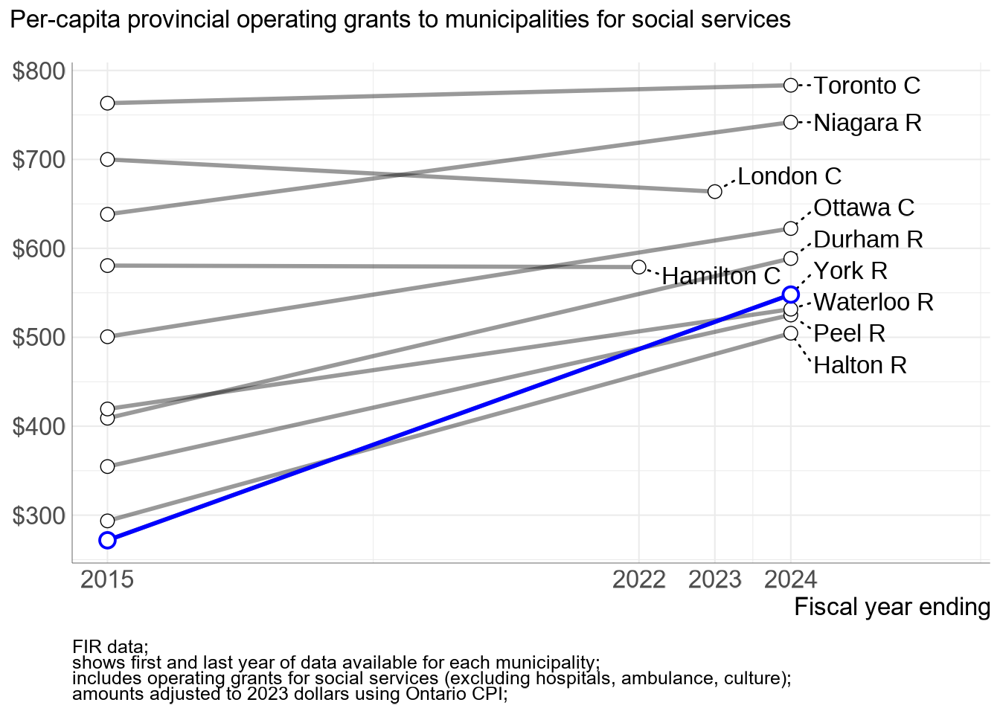
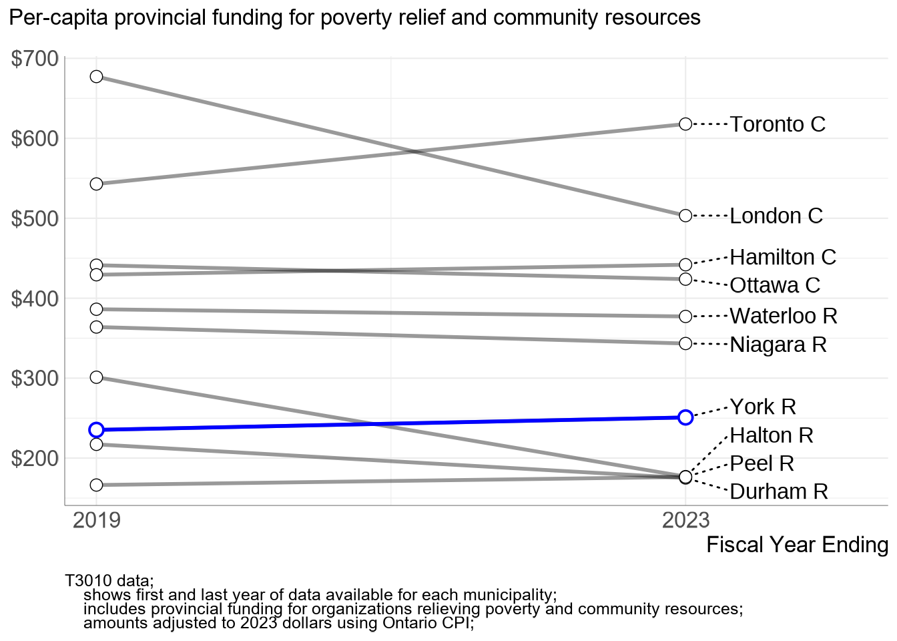

1 Average calculated across available UT / ST municipalities with populations over 300,000
2 Total gap is the product of per-capita gap and municipal population
Show code
tbls[["fir-summary-soc"]] |>filter(marsyear %in%2015:2024) |>slope_chart( pc_real_muni, ylab ="Per-capita provincial support (Social)",yfmt = scales::dollar_format(prefix ="$"), highlight_ut ="York R", highlight_colour ="blue" ) +labs(y =NULL, x ="Fiscal year ending",subtitle ="Per-capita provincial operating grants to municipalities for social services",caption ="FIR data;\nshows first and last year of data available for each municipality;\nincludes operating grants for social services (excluding hospitals, ambulance, culture);\namounts adjusted to 2023 dollars using Ontario CPI;" )

Figure 1.1: Provincial operating funding for municipal services (per capita), 2015-2023
Table 1.4: Summary of provincial funding for poverty relief and community resource organizations, 2019-2023
Year
Provincial Support per Capita
York Population
Total Gap2
Ontario Average1
York
Gap
2019
$383
$235
−$148
1,202,535
−$177,514,779
2020
$394
$242
−$152
1,213,602
−$184,959,495
2021
$410
$251
−$159
1,228,180
−$195,138,854
2022
$385
$243
−$142
1,239,424
−$175,997,359
2023
$389
$251
−$139
1,258,161
−$174,319,715
Average (2015-2024)
$392
$244
−$148
1,228,380
−$181,574,539
1 Average calculated across available UT / ST municipalities with populations over 300,000
2 Total gap is the product of per-capita gap and municipal population
Show code
tbls[["t3010-summary"]] |>filter(marsyear %in%2019:2023) |>slope_chart( pc_real_muni, xvar = marsyear, ylab ="Per-capita provincial funding for poverty relief and community resources",yfmt = scales::dollar_format(prefix ="$"),highlight_ut ="York R",highlight_colour ="blue" ) +labs(caption ="T3010 data; shows first and last year of data available for each municipality; includes provincial funding for organizations relieving poverty and community resources; amounts adjusted to 2023 dollars using Ontario CPI;" )

Figure 1.3: Provincial funding for community organizations, 2019-2023
tbls[["combined-gap"]] <- tbls[c("fir-summary-core","fir-summary-soc","t3010-summary","lhin-summary","efis-summary")] |>map_dfr(\(.tbl) { .tbl |> dplyr::filter( data_year ==Inf, ut_name =="York R" ) |> dplyr::select( ut_name, channel, data_range, headline_gap_pc, headline_gap_total ) }) %>% dplyr::bind_rows(summarize(., channel ="Z) Total",data_range ="(2015-2024)",headline_gap_pc =sum(headline_gap_pc, na.rm =TRUE),headline_gap_total =sum(headline_gap_total, na.rm =TRUE),.by = ut_name ) )tbls[["combined-gap"]] |> gt::gt() |> gt::cols_hide(c(ut_name) ) |> gt::cols_label(channel ="Funding Channel",data_range ="Data Range",headline_gap_pc ="Per Capita Gap",headline_gap_total ="Annualized Total Gap" ) |> gt::fmt_currency(columns =c(matches("^(headline_gap)") ), decimals =0 ) |> gt::tab_footnote(footnote ="For individual channels, Per Capita Gap is the annual average per-capita funding gap over the data range; The total row sums the per-capita gaps across channels", locations = gt::cells_column_labels(columns =c(headline_gap_pc)) ) |> gt::tab_footnote(footnote ="Annualized Total Gap is the product of Per Capita Gap and the average York Region population over the data range", locations = gt::cells_column_labels(columns =c(headline_gap_total)) )
Table 1.7: Combined Funding Gap for York Region
Funding Channel
Data Range
Per Capita Gap1
Annualized Total Gap2
Municipal Services (Core)
(2015-2024)
$65
$79,547,278
Municipal Services (Social)
(2015-2024)
−$182
−$221,768,531
Nonprofit Services (Poverty Relief and Community Resources)
(2019-2023)
−$148
−$181,574,539
Local Health Integration Networks (LHINs)
(2017-2020)
−$39
−$46,723,172
Public School Boards
(2021-2024)
−$197
−$246,728,686
Roman Catholic Separate School Boards
(2021-2024)
−$32
−$40,029,564
Z) Total
(2015-2024)
−$533
−$657,277,214
1 For individual channels, Per Capita Gap is the annual average per-capita funding gap over the data range; The total row sums the per-capita gaps across channels
2 Annualized Total Gap is the product of Per Capita Gap and the average York Region population over the data range